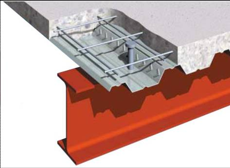

Cubierta de acero compuesto y losa de hormigón [FME3]
Hormigón armado concreto en chapa de acero, con el apoyo de las vigas o paredes de soporte de carga.

Cubierta de acero compuesto y losa de hormigón (SteelDecking, UK)

Cerchas de acero ( vigas de acero de alma abierta) de apoyo de acero compuesto y sistema de piso de concreto, Canada (S. Brzev)

Vigas de acero de soporte de acero compuesto y suelo de la cubierta de hormigón, USA (S. Brzev)